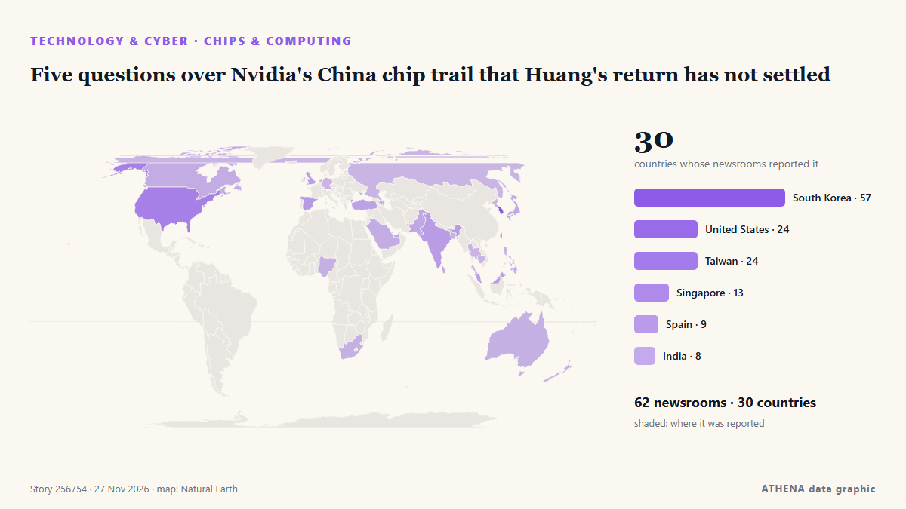

Five questions over Nvidia's China chip trail that Huang's return has not settled

For Nvidia shareholders, the main risk is regulatory rather than personal. from investingLive (ForexLive)
What changed 13 new reports from 8 outlets in the last 24 hours.
See the sources ›Evidence: Limited
Reported independently by 62 outlets in 30 countries since 20 Feb, first by RIETI; coverage is still spreading. ATHENA rates the risk moderate (3.4/10), driven mainly by the severity of the harm described and its geographic and sector reach. Confidence is 64% (moderate), with 62 independent outlets corroborating it and an average source reliability of 73%. Outlets by country: Taiwan (8), United States (7), South Korea (6). Coverage: 20 Feb to 26 Nov, 6714 hours.
What changed: 13 new reports from 8 outlets in the 24 hours to 27 Nov.
First reported as: Nvidia pressed Taiwan officials over its indicted manager
AutomatedSelected, grouped and scored by ATHENA's published method from 23 independent outlets. The headline is the outlet's own; ATHENA's sentences follow fixed patterns - no generative AI writes them. How it works →
How to read this page
- What you are reading
- 62 outlets in 30 countries reported this event. The reports below are listed in the order they appeared; each headline opens the original article. ATHENA writes none of the reports.
- Our reading
- For the record — The reports describe a completed, domestic, commercial or personal matter. We list it so you can see who reported it and when. We are not tracking a risk of wider conflict here.
- How much evidence
- Limited Treat this page as an early report.
After repeats, off-topic items and stale reports are removed, 11 of the 39 listed reports are counted; 49% of the headlines match the event.
- What this does not mean
- ATHENA measures how an event is reported, not whether it is true. This is not a forecast, a judgement on who is right, or advice.
- What would change it
- Reports from other independent outlets showing a different development, or a firm confirmation or denial from an official source.
Reading R2 · refreshed with every update of this page. ATHENA has not yet published a track record for these readings; when it does, it will be linked here.
At a glance
Selected, scored and written by ATHENA's published methodology. No editor intervenes in individual events. How this is produced ›
| 20 Feb 04:00 UTC | 1 |
|---|---|
| 22 Feb 04:00 UTC | 0 |
| 24 Feb 04:00 UTC | 0 |
| 26 Feb 04:00 UTC | 0 |
| 28 Feb 04:00 UTC | 0 |
| 02 Mar 04:00 UTC | 0 |
| 04 Mar 04:00 UTC | 0 |
| 06 Mar 04:00 UTC | 0 |
| 08 Mar 04:00 UTC | 0 |
| 10 Mar 04:00 UTC | 0 |
| 12 Mar 04:00 UTC | 0 |
| 14 Mar 04:00 UTC | 0 |
| 16 Mar 04:00 UTC | 0 |
| 18 Mar 04:00 UTC | 0 |
| 20 Mar 04:00 UTC | 0 |
| 22 Mar 04:00 UTC | 0 |
| 24 Mar 04:00 UTC | 0 |
| 26 Mar 04:00 UTC | 0 |
| 28 Mar 04:00 UTC | 0 |
| 30 Mar 04:00 UTC | 0 |
| 01 Apr 04:00 UTC | 0 |
| 03 Apr 04:00 UTC | 0 |
| 05 Apr 04:00 UTC | 0 |
| 07 Apr 04:00 UTC | 0 |
| 09 Apr 04:00 UTC | 0 |
| 11 Apr 04:00 UTC | 0 |
| 13 Apr 04:00 UTC | 0 |
| 15 Apr 04:00 UTC | 0 |
| 17 Apr 04:00 UTC | 0 |
| 19 Apr 04:00 UTC | 0 |
| 21 Apr 04:00 UTC | 0 |
| 23 Apr 04:00 UTC | 0 |
| 25 Apr 04:00 UTC | 0 |
| 27 Apr 04:00 UTC | 0 |
| 29 Apr 04:00 UTC | 0 |
| 01 May 04:00 UTC | 0 |
| 03 May 04:00 UTC | 0 |
| 05 May 04:00 UTC | 0 |
| 07 May 04:00 UTC | 0 |
| 09 May 04:00 UTC | 0 |
| 11 May 04:00 UTC | 0 |
| 13 May 04:00 UTC | 0 |
| 15 May 04:00 UTC | 0 |
| 17 May 04:00 UTC | 0 |
| 19 May 04:00 UTC | 0 |
| 21 May 04:00 UTC | 0 |
| 23 May 04:00 UTC | 0 |
| 25 May 04:00 UTC | 0 |
| 27 May 04:00 UTC | 0 |
| 29 May 04:00 UTC | 0 |
| 31 May 04:00 UTC | 0 |
| 02 Jun 04:00 UTC | 0 |
| 04 Jun 04:00 UTC | 0 |
| 06 Jun 04:00 UTC | 0 |
| 08 Jun 04:00 UTC | 0 |
| 10 Jun 04:00 UTC | 0 |
| 12 Jun 04:00 UTC | 0 |
| 14 Jun 04:00 UTC | 0 |
| 16 Jun 04:00 UTC | 0 |
| 18 Jun 04:00 UTC | 0 |
| 20 Jun 04:00 UTC | 0 |
| 22 Jun 04:00 UTC | 0 |
| 24 Jun 04:00 UTC | 0 |
| 26 Jun 04:00 UTC | 0 |
| 28 Jun 04:00 UTC | 0 |
| 30 Jun 04:00 UTC | 0 |
| 02 Jul 04:00 UTC | 0 |
| 04 Jul 04:00 UTC | 0 |
| 06 Jul 04:00 UTC | 0 |
| 08 Jul 04:00 UTC | 0 |
| 10 Jul 04:00 UTC | 0 |
| 12 Jul 04:00 UTC | 0 |
| 14 Jul 04:00 UTC | 0 |
| 16 Jul 04:00 UTC | 0 |
| 18 Jul 04:00 UTC | 0 |
| 20 Jul 04:00 UTC | 0 |
| 22 Jul 04:00 UTC | 0 |
| 24 Jul 04:00 UTC | 0 |
| 26 Jul 04:00 UTC | 0 |
| 28 Jul 04:00 UTC | 0 |
| 30 Jul 04:00 UTC | 0 |
| 01 Aug 04:00 UTC | 0 |
| 03 Aug 04:00 UTC | 0 |
| 05 Aug 04:00 UTC | 0 |
| 07 Aug 04:00 UTC | 0 |
| 09 Aug 04:00 UTC | 0 |
| 11 Aug 04:00 UTC | 0 |
| 13 Aug 04:00 UTC | 0 |
| 15 Aug 04:00 UTC | 0 |
| 17 Aug 04:00 UTC | 0 |
| 19 Aug 04:00 UTC | 0 |
| 21 Aug 04:00 UTC | 0 |
| 23 Aug 04:00 UTC | 0 |
| 25 Aug 04:00 UTC | 0 |
| 27 Aug 04:00 UTC | 0 |
| 29 Aug 04:00 UTC | 0 |
| 31 Aug 04:00 UTC | 0 |
| 02 Sep 04:00 UTC | 0 |
| 04 Sep 04:00 UTC | 0 |
| 06 Sep 04:00 UTC | 0 |
| 08 Sep 04:00 UTC | 0 |
| 10 Sep 04:00 UTC | 0 |
| 12 Sep 04:00 UTC | 0 |
| 14 Sep 04:00 UTC | 0 |
| 16 Sep 04:00 UTC | 0 |
| 18 Sep 04:00 UTC | 0 |
| 20 Sep 04:00 UTC | 0 |
| 22 Sep 04:00 UTC | 0 |
| 24 Sep 04:00 UTC | 0 |
| 26 Sep 04:00 UTC | 0 |
| 28 Sep 04:00 UTC | 0 |
| 30 Sep 04:00 UTC | 0 |
| 02 Oct 04:00 UTC | 0 |
| 04 Oct 04:00 UTC | 0 |
| 06 Oct 04:00 UTC | 0 |
| 08 Oct 04:00 UTC | 0 |
| 10 Oct 04:00 UTC | 0 |
| 12 Oct 04:00 UTC | 0 |
| 14 Oct 04:00 UTC | 0 |
| 16 Oct 04:00 UTC | 0 |
| 18 Oct 04:00 UTC | 0 |
| 20 Oct 04:00 UTC | 0 |
| 22 Oct 04:00 UTC | 0 |
| 24 Oct 04:00 UTC | 0 |
| 26 Oct 04:00 UTC | 0 |
| 28 Oct 04:00 UTC | 0 |
| 30 Oct 04:00 UTC | 0 |
| 01 Nov 04:00 UTC | 0 |
| 03 Nov 04:00 UTC | 0 |
| 05 Nov 04:00 UTC | 0 |
| 07 Nov 04:00 UTC | 0 |
| 09 Nov 04:00 UTC | 0 |
| 11 Nov 04:00 UTC | 0 |
| 13 Nov 04:00 UTC | 0 |
| 15 Nov 04:00 UTC | 24 |
| 17 Nov 04:00 UTC | 71 |
| 19 Nov 04:00 UTC | 45 |
| 21 Nov 04:00 UTC | 13 |
| 23 Nov 04:00 UTC | 36 |
| 25 Nov 04:00 UTC | 18 |
Why these numbers
Importance
How widely and how prominently the story is reported.
Risk
What the reports describe, scored for possible harm. It is not a forecast.
Confidence
How well independent outlets support the story.
Shown as 64% (calculated 86%): the evidence reading is Limited, so confidence is held at moderate.
The reporting — who reported it, and when
headline as published · opens the original- RIETI · JapanHow Oil Prices Impact Asian Economies: Evidence from the stock market
- The Next Web · NetherlandsNvidia pressed Taiwan officials over its indicted manager
- Cointelegraph · United StatesAsian chip stocks tumble ahead of Nvidia Q3 earnings
- European Central Bank press · GermanyBoris Vujčić: Risks and resilience in the euro area financial system
- Anadolu Agency (English) · TurkeyAsian chip, tech stocks tumble ahead of Nvidia earnings as AI concerns weigh on markets
- NK News · North KoreaSeoul’s demand for mine apology derailed push for North Korea talks: Sources
- FXStreet · SpainWe could, conceivably, get a burst bubble if Nvida earnings fail to impress
- The Business Standard (Bangladesh) (working feed) · BangladeshRising costs, inefficiencies weigh on listed state-owned firms' Q1 earnings
- Stuff · New ZealandDon’t screw the crew, and other lessons from Nvidia
- Taipei Times · TaiwanOfficial plays down risks amid Nvidia uncertainty
- FXStreet · SpainBitcoin nears a critical breaking point as global markets signal a deeper risk reset
- Retail Dive · United StatesDillard’s grabs some market share again despite weak sales growth
- FXStreet · SpainNvidia's terrible November faces a major pivot point on Tuesday
- Cointelegraph · United StatesNvidia turmoil tests Bitcoin miners’ AI funding plans
- Decrypt · United StatesFed Is Modeling AI 'Super Intelligence' Scenarios, Including Job Losses and a Stock Market Slump
- The Business Times · SingaporeEuropean stocks ease as tech and miners drag
- Yonhap (English) · South KoreaSamsung Electronics, SK hynix cash holdings surge amid AI-driven chip boom
- DigiTimes Asia · TaiwanUK sovereign AI push needs Taiwan's chip manufacturing and OSAT partners
- The Daily Star — page reader · Bangladesh‘We’ll honour our sovereign debt’
- The Korea Times · South KoreaSamsung Electronics, SK hynix cash holdings surge amid AI-driven chip boom
- DigiTimes Asia · TaiwanSamsung's reported 8-inch foundry exit sharpens focus on DB HiTek's expansion and pricing power
- DigiTimes Asia · TaiwanTaiwan unveils 2027–2030 tech blueprint to strengthen chip leadership, advance sovereign AI
- DigiTimes Asia · TaiwanSamsung develops custom HBM for Meta, adopts 2nm process
- DigiTimes Asia · TaiwanSamsung Foundry targets defense, robotics markets through South Korea's homegrown AI chip initiative
- DigiTimes Asia · TaiwanSK Hynix's US revenue tops 60%, exposing Nvidia's growing weight in AI memory sales
- Korea Herald · South KoreaSamsung, SK hynix spend W88tr on capex as cash holdings soar
- DigiTimes Asia · TaiwanSK Hynix accelerates Yongin Y1 cleanroom opening as AI memory demand surges
- The Korea Times · South KoreaKOSPI tumbles below 5,000 for 1st time in 9 months as AI fears spark foreign exodus
- Moneyweb · South AfricaCoronation takes ‘short-term’ funds management earnings hit
- Free Malaysia Today · MalaysiaTech, data centre stocks drag Bursa lower
- investingLive (ForexLive) · INTS&P 500 analysis before Nvidia's earnings tonight
- Inc. · United StatesNvidia’s Leadership Crisis—and the CEOs Who Are Screwing It Up for Everyone
- FXStreet · SpainTech takes another beating as Wall Street braces for Nvidia’s first earnings without Jensen
- Korea Herald · South KoreaDubai Chamber debuts in Korea to woo investors
- Korea Herald · South KoreaKospi slides below 5,000 for first time since February
- Cointelegraph · United StatesBitcoin drops 2.5% as Nvidia stock risks new 5-month lows into Q3 earnings
- Tom's Hardware · United StatesNvidia claims its Vera CPU can gain up to 39% performance boost via software optimization at SC26 — architectural fine-tuning is needed to fully unleash custom Olympus cores
- FXStreet · SpainBitcoin holds $63K by a thread as markets flash risk-off signals across Stocks, Gold, FX and Crypto
- investingLive (ForexLive) · INTFive questions over Nvidia's China chip trail that Huang's return has not settled